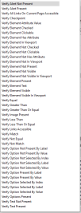

Une assertion est une proposition, affirmative ou négative, qui est présentée comme vraie et incontestable par celui qui l'énonce. (Larousse)
En programmation informatique, une assertion est une expression qui doit être évaluée à vrai. Si cette évaluation échoue elle peut mettre fin à l'exécution du programme, ou bien lancer une exception.
Dans le test automatisé, les assertions sont indispensables. Elles constituent le test.
On utilisera les assertions pour
les vérifications de présence (ou d'absence) d'éléments tels que : du texte, un logo, une image,...
s'assurer de la sélection d'une option ou de l'état d'un bouton.
Pour réaliser les vérifications attendues l'automaticien utilisera les actions Verify
Le testeur peut configurer l'issue du test en fonction de la validité ou non de l'assertion.
Méthode principale d'assertion. Les deux sous catégories les plus utilisées sont : | Zoom |